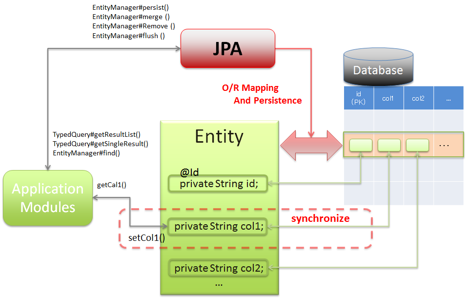
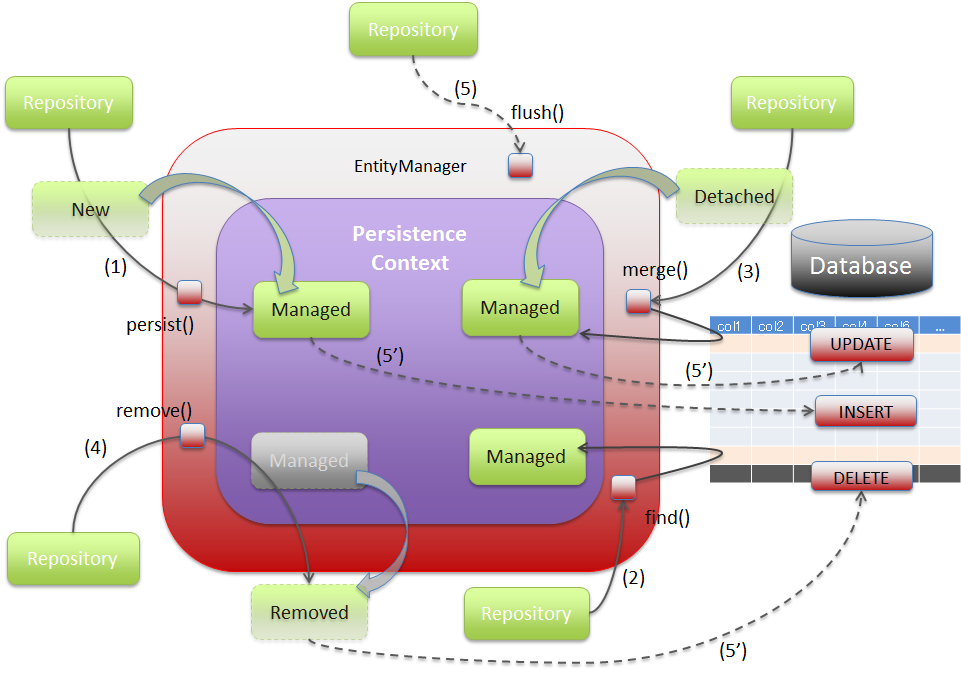
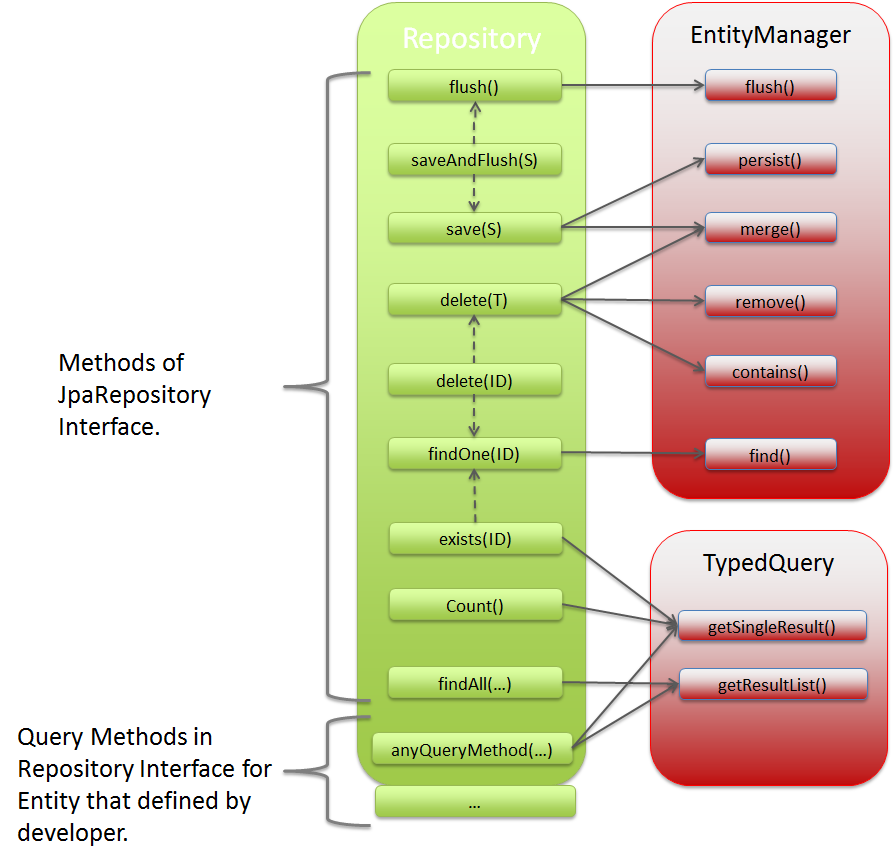
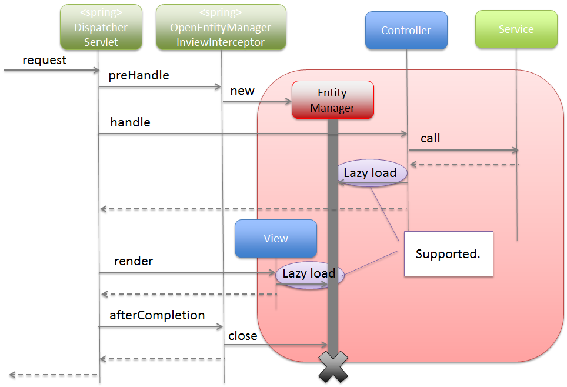
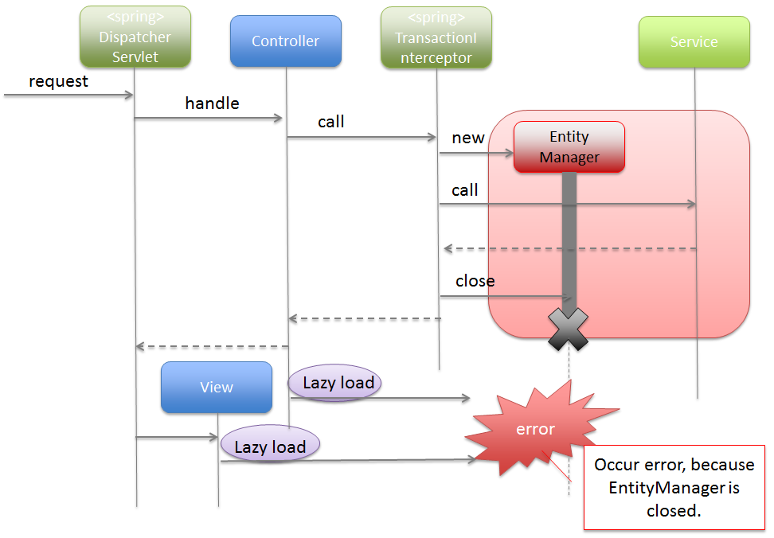
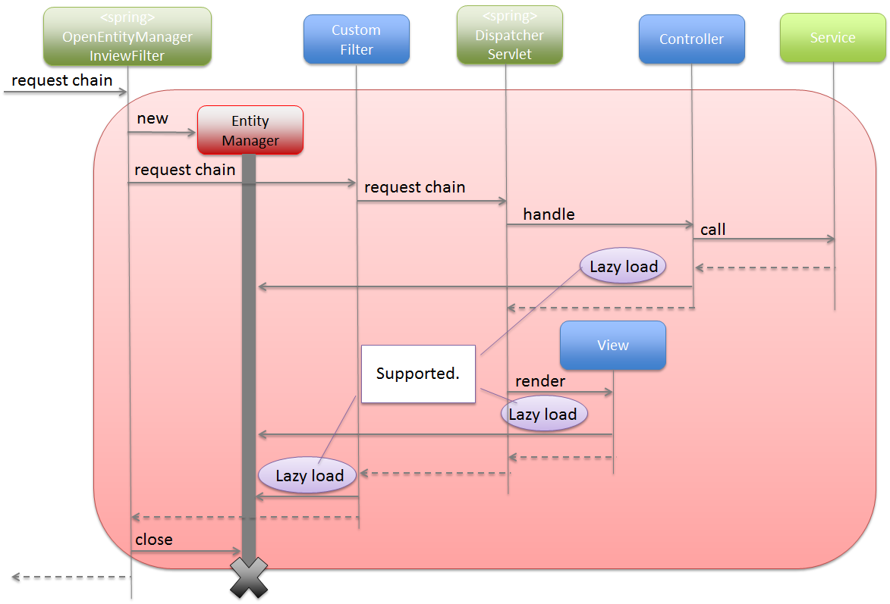
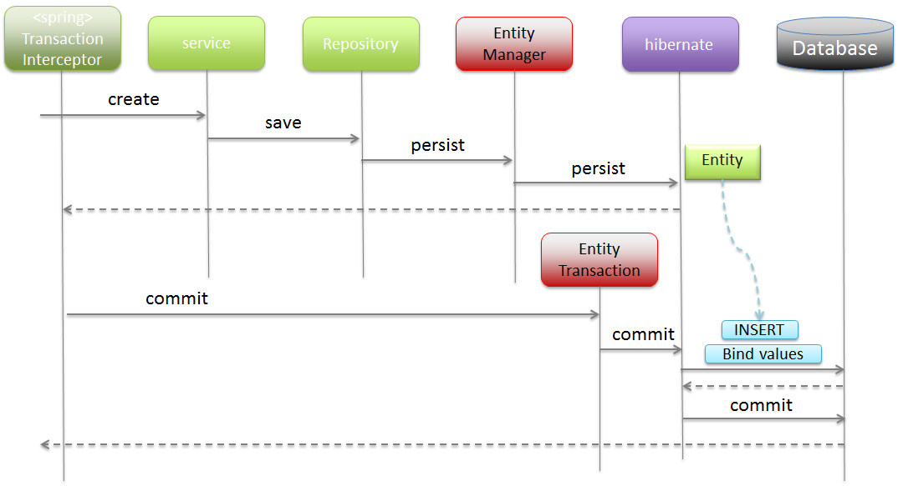
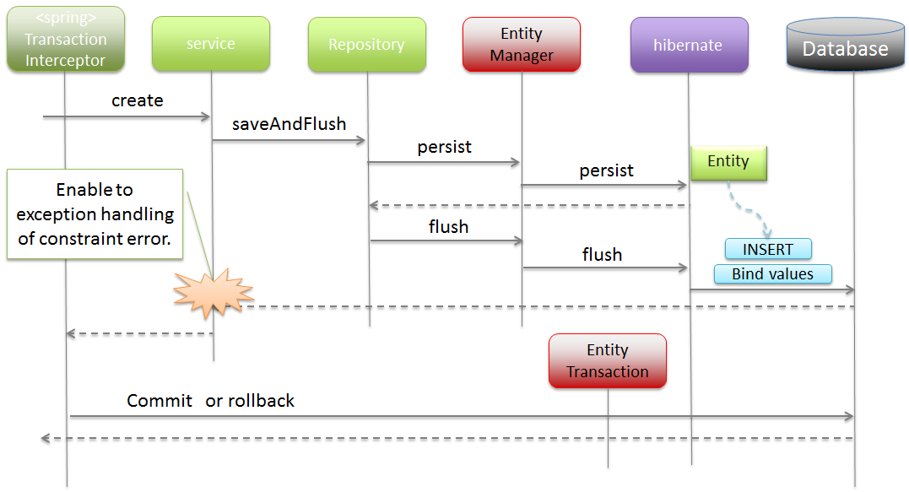
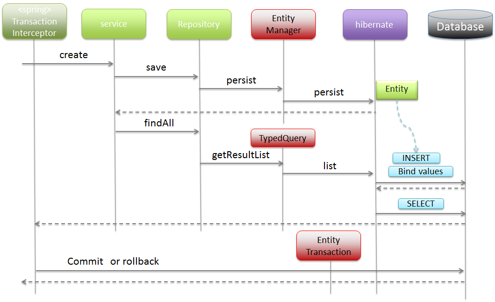

6.3. Database Access (JPA)¶
Caution
This version is already obsolete. Please check the latest guideline.
Table of Contents
- Overview
- How to use
- pom.xml settings
- Application Settings
- Creating Repository interface
- Adding query method
- Specifying a query while calling a query method
- Implementing the process to search entities
- Implementing search process as per the dynamic conditions of entities
- Implementing the process to fetch entities
- Adding entities
- Updating entities
- Deleting entities
- Escaping at the time of LIKE search
- JOIN FETCH
- How to extend
Todo
TBD
The following topics in this chapter are currently under study.
persistence.xmlsettings- Implementing dynamic query using QueryDSL
- Examples of cases wherein it is desirable to change the default setting values for specifying fetch method of related-entities.
- Using multiple PersistenceUnits
- Using Native query
6.3.1. Overview¶

Picture - Target of description
Warning
The contents described in this chapter may not be applicable for JPA providers other than Hibernate such as EclipseLink etc.
6.3.1.1. About JPA¶
- JPA (Java Persistence API) defines the following as an API of Java:
- a way of mapping the records in a relational database, with the java objects
- a mechanism for reflecting the operations done on the java object, to the records in a relational database.
6.3.1.1.1. O/R Mapping of JPA¶
Mapping of Java objects to the relational database records at the time of using JPA is as follows:
Picture - Image of O/R Mapping
{kind=link}
6.3.1.1.2. Basic JPA terminology¶
The basic terminology of JPA is described below.
Sr. No. Term Description
@javax.persistence.Entityannotation is an Entity class.
javax.persistence.EntityManager, the application handles the relational database records as Java objects.When using Spring Data JPA, this interface is usually not used directly; however, if it is necessary to generate a query that cannot be expressed using the Spring Data JPA mechanism, then this interface can be used to fetch the entity.
javax.persistence.TypedQuery, the application searches for the entity matching the specified conditions other than ID.When using Spring Data JPA, this interface is usually not used directly; however, if it is necessary to generate a query that cannot be expressed using Spring Data JPA mechanism, then this interface can be used to search the entity.The method for directly operating (updating or deleting) the entity of persistence layer (DB) matching the conditions, is also provided in this interface.
EntityManageris managed by storing that entity in this area. The entity managed in this area is referred to as “Managed Entity”.This area cannot be directly accessed from the application.Apart from “Managed” entity, the other states of entity are “New”, “Removed” and “Detached”.
EntityManagerand all the operations performed to INSERT the records in the relational database are accumulated in PersistenceContext (and later reflected to the database at the time of transaction commit or when the flush method of EntityManager is called).
EntityManagerand the all operations performed to UPDATE the records stored in a relational database are accumulated in PersistenceContext (and later reflected to the database at the time of transaction commit or when the flush method of EntityManager is called).However, if the record matching the ID does not exist in the relational database, then INSERT is executed instead of UPDATE.
EntityManagerand all the operations performed to DELETE the records stored in a relational database are accumulated in PersistenceContext.
EntityManagerand the accumulated un-reflected operations are reflected in the relational database.Normally, operations are reflected to the relational database only when a transaction is committed; however, flush method is used when the operation needs to be reflected in the database before committing a transaction.
6.3.1.1.3. Managing life cycle of entity¶
The life cycle of entity is managed as follows:
Picture - Life cycle of entity
Sr. No. Description EntityManageris called, the entity (“New” entity) passed as an argument is stored in PersistenceContext as “managed” entity.EntityManageris called, a “managed” entity with ID passed as an argument, is returned.If it does not exist in PersistenceContext, the records to be mapped are retrieved from the relational database by executing a query and stored as “managed” entity.EntityManageris called, the state of the entity (“detached”) passed as an argument, is merged with “managed” entity.If it does not exist in PersistenceContext, the records to be mapped are retrieved from the relational database by executing a query. The state of the entity passed as an argument is merged after the “managed” entity is stored.Note that when this method is called, the entity passed as an argument does not necessarily get stored as “managed” entity unlike persist method.EntityManageris called, the “managed” entity passed as an argument becomes “removed” entity.If this method is called, it is not possible to retrieve the “removed” entity.EntityManageris called, the operations of the entity accumulated using persist, merge and remove methods are reflected in the relational database.By calling this method, the changes done for an entity are synchronized with the records of relational database.However, the changes made only for the records of relational database are not synchronized with the entity.If the entity is searched by executing a query without using find method ofEntityManager, then prior to the search process, a process similar to flush method is executed in the internal logic ofEntityManagerand the operations of the accumulated entity are reflected in the relational database.For timing to reflect the persistence operations at the time of using Spring Data JPA,refer to
{kind=link}
Note
About other life cycle management methods
The detach method, refresh method and clear method are available in
EntityManagerto manage the entity life cycle. However, when using Spring Data JPA, there is no mechanism to call these methods using the default function, hence only their roles are described below.
- detach method is used to set a “managed” entity to “detached” entity.
- refresh method is used to update the “managed” entity as per the state of relational database.
- clear method is used to delete the entity managed in PersistenceContext and the accumulated operations from the memory.
clear method can be called by setting the clearAutomatically attribute of
@Modifyingannotation of Spring Data JPA totrue. For details, refer to Operating the entities of Persistence Layer directly.
Note
About operations of “new” and “detached” entities
The operations performed on “new” and “detached” entities are not reflected in the relational database unless persist method or merge method is called.
6.3.1.2. About Spring Data JPA¶
Spring Data JPA provides the library to create Repository using JPA.
The basic flow at the time of accessing the database using Spring Data JPA is shown below.

Picture - Basic flow of Spring Data JPA
Sr. No. Description org.springframework.data.jpa.repository.support.SimpleJpaRepositoryor custom Repository class.Parameters specified by Service are passed.
Picture - API Mapping of Spring Data JPA and JPA
{kind=link}
6.3.2. How to use¶
6.3.2.1. pom.xml settings¶
When using JPA (Spring Data JPA) in infrastructure layer, add the following dependency to pom.xml
<!-- (1) --> <dependency> <groupId>org.terasoluna.gfw</groupId> <artifactId>terasoluna-gfw-jpa-dependencies</artifactId> <type>pom</type> </dependency>
Sr. No. Description terasoluna-gfw-jpa-dependencieswhere the libraries associated with JPA are defined should be added to dependency.
Note
In the above setting example, since it is assumed that the dependent library version is managed by the parent project terasoluna-gfw-parent, specifying the version in pom.xml is not necessary.
6.3.2.2. Application Settings¶
6.3.2.2.1. Datasource settings¶
6.3.2.2.2. EntityManager settings¶
Perform settings to use EntityManager.
- xxx-infra.xml
<!-- (1) --> <bean id="jpaVendorAdapter" class="org.springframework.orm.jpa.vendor.HibernateJpaVendorAdapter"> <!-- (2) --> <property name="showSql" value="false" /> <!-- (3) --> <property name="database" value="POSTGRESQL" /> </bean> <!-- (4) --> <bean id="entityManagerFactory" class="org.springframework.orm.jpa.LocalContainerEntityManagerFactoryBean"> <!-- (5) --> <property name="packagesToScan" value="xxxxxx.yyyyyy.zzzzzz.domain.model" /> <!-- (6) --> <property name="dataSource" ref="dataSource" /> <!-- (7) --> <property name="jpaVendorAdapter" ref="jpaVendorAdapter" /> <!-- (8) --> <property name="jpaPropertyMap"> <util:map> <entry key="hibernate.hbm2ddl.auto" value="" /> <entry key="hibernate.ejb.naming_strategy" value="org.hibernate.cfg.ImprovedNamingStrategy" /> <entry key="hibernate.connection.charSet" value="UTF-8" /> <entry key="hibernate.show_sql" value="false" /> <entry key="hibernate.format_sql" value="false" /> <entry key="hibernate.use_sql_comments" value="true" /> <entry key="hibernate.jdbc.batch_size" value="30" /> <entry key="hibernate.jdbc.fetch_size" value="100" /> </util:map> </property> </bean>
Sr. No. Description org.springframework.orm.jpa.vendor.HibernateJpaVendorAdapter.Set the SQL output flag. In the example, “false: Do not output” has been specified. org.springframework.orm.jpa.vendor.Databaseenumerator type.In the example, “PostgreSQL” has been specified.[The value should be changed according to the database used in the project]If the database to be used changes with the environment, the value should be defined in properties file.javax.persistence.EntityManagerFactoryinstance.Specifyorg.springframework.orm.jpa.LocalContainerEntityManagerFactoryBean.javax.persistence.EntityManager.[The value should be changed to the relevant package name according to the project]JpaVendorAdapterbean.Specify the bean set in (1).EntityManagerof Hibernate.For details, refer to “Hibernate Reference Documentation” .
Tip
When using the Oracle database, ANSI standard SQL JOIN for combining tables, can be used by specifying the following settings in
jpaPropertyMapmentioned in (8).<bean id="entityManagerFactory" class="org.springframework.orm.jpa.LocalContainerEntityManagerFactoryBean"> <!-- omitted --> <property name="jpaPropertyMap"> <util:map> <!-- omitted --> <entry key="hibernate.dialect" value="org.hibernate.dialect.Oracle12cDialect" /> <!-- (9) --> </util:map> </property> </bean>
Sr. No. Description org.hibernate.dialect.Oracle12cDialectinhibernate.dialect.By specifyingOracle12cDialect, ANSI standard SQL JOIN clause for combining the tables can be used.
- xxx-infra.xml
<bean id="entityManagerFactory" class="org.springframework.orm.jpa.LocalContainerEntityManagerFactoryBean"> <!-- omitted --> <!-- (10) --> <property name="jtaDataSource" ref="dataSource" /> <!-- omitted --> <property name="jpaPropertyMap"> <util:map> <!-- omitted --> <!-- (11) --> <entry key="hibernate.transaction.jta.platform" value="org.hibernate.service.jta.platform.internal.WeblogicJtaPlatform" /> </util:map> </property> </bean>
Sr. No. Description jtaDataSourceproperty and not indataSourceproperty.Refer to Datasource settings of common edition for the method to fetch DataSource defined in application server.jpaPropertyMapproperty.The above example illustrates usage of Weblogic JTA.The configurable value (platform) is FQCN oforg.hibernate.service.jta.platform.spi.JtaPlatformimplementation class.The implementation class for main application servers is provided by Hibernate.
Note
When it is necessary to switch the transaction manager to be used as per the environment, then it is recommended that you define
entityManagerFactorybean inxxx-env.xmlinstead ofxxx-infra.xml.An example wherein it is necessary to change the transaction manager as per environment can be: use of application server without JTA function such as Tomcat in case of local environment, and use of application server with JTA function such as Weblogic in case of production environment as well as various test environments.
6.3.2.2.3. PlatformTransactionManager settings¶
Perform the following settings when using local transaction.
- xxx-env.xml
<bean id="transactionManager" class="org.springframework.orm.jpa.JpaTransactionManager"> <!-- (1) --> <property name="entityManagerFactory" ref="entityManagerFactory" /> <!-- (2) --> </bean>
Sr. No. Description Specify org.springframework.orm.jpa.JpaTransactionManager. This class controls transaction by calling APIs of JPA.EntityManagerto be used in the transaction.
Perform the following settings when transaction manager (JTA) of the application server is to be used.
- xxx-env.xml
<tx:jta-transaction-manager /> <!-- (1) -->
Sr. No. Description The most appropriate org.springframework.transaction.jta.JtaTransactionManageris defined as bean with id as “transactionManager”, in the application server on which the application has been deployed. This class controls the transaction by calling JTA APIs.
6.3.2.2.4. persistence.xml settings¶
LocalContainerEntityManagerFactoryBean, there are no mandatory settings to be performed in persistence.xml.Todo
TBDCurrently, there are no mandatory settings to be performed in
persistence.xml; however such need may arise in future.When using EntityManagerFactory in application server of Java EE, it may be necessary to perform few settings inpersistence.xml; hence we are planning to provide maintenance for such settings in future.
6.3.2.2.5. Settings for validating Spring Data JPA¶
- xxx-infra.xml
<?xml version="1.0" encoding="UTF-8"?> <beans xmlns="http://www.springframework.org/schema/beans" xmlns:jpa="http://www.springframework.org/schema/data/jpa" xmlns:xsi="http://www.w3.org/2001/XMLSchema-instance" xsi:schemaLocation="..... http://www.springframework.org/schema/data/jpa http://www.springframework.org/schema/data/jpa/spring-jpa.xsd"> <!-- (1) --> <!-- ... --> </beans><jpa:repositories base-package="xxxxxx.yyyyyy.zzzzzz.domain.repository" /> <!-- (2) -->
Sr. No. Description jpa) as namespace.org.springframework.data.repository.Repositoryand interface withorg.springframework.data.repository.RepositoryDefinitionannotation are automatically defined as a bean of Repository class of Spring Data JPA.
- Attributes of <jpa:repositories> element
- entity-manager-factory-ref, transaction-manager-ref, named-queries-location, query-lookup-strategy, factory-class and repository-impl-postfix are present as attributes.
Sr. No. Element Description
entity-manager-factory-ref EntityManagerto be used in Repository.If multiple Factories ofEntityManagerare to be created, then it is necessary to specify the bean to be used.
transaction-manager-ref PlatformTransactionManagerto be used when the methods of Repository are called.The bean registered withtransactionManagerbean name is used by default.It needs to be specified when the bean name ofPlatformTransactionManagerto be used is nottransactionManager.
named-queries-location
query-lookup-strategy "CREATE_IF_NOT_FOUND". For details, refer to Spring Data Commons - Reference Documentation - “Query lookup strategies”. Use the default settings if there is no specific reason.
factory-class org.springframework.data.jpa.repository.support.JpaRepositoryFactoryis used by default. Specify the Factory created for changing default implementation of Spring Data JPA or for adding a new method.For how to add a new method, refer to Adding the custom methods to all Repository interfaces in batch.
repository-impl-postfix Impl. For example: when Repository interface name isOrderRepository,OrderRepositoryImplwill be the implementation class of custom Repository. Use the default settings if there is no specific reason.For custom Repository, refer to “Adding individual custom method to entity specific Repository interface”.
6.3.2.2.6. Settings for using JPA annotations¶
javax.persistence.EntityManagerFactory and javax.persistence.EntityManager using the annotations (javax.persistence.PersistenceContext and javax.persistence.PersistenceUnit) provided by JPA, org.springframework.orm.jpa.support.PersistenceAnnotationBeanPostProcessor should be defined as bean.<jpa:repositories> element is specified, bean is defined by default; hence no need to define it separately.6.3.2.2.7. Settings for converting JPA exception to DataAccessException¶
DataAccessException of Spring Framework, org.springframework.dao.annotation.PersistenceExceptionTranslationPostProcessor should be defined as bean.<jpa:repositories> element is specified, bean is defined by default; hence no need to define it separately.6.3.2.2.8. OpenEntityManagerInViewInterceptor settings¶
To perform Lazy Fetching of Entity in application layer such as Controller and JSP etc., the lifetime of EntityManager should be extended till application layer
using org.springframework.orm.jpa.support.OpenEntityManagerInViewInterceptor.
Picture - Lifetime of EntityManager on OpenEntityManagerInViewInterceptor
{kind=link}
When OpenEntityManagerInViewInterceptor is not to be used, the lifetime of EntityManager becomes same as that of transaction;
hence it is necessary to either fetch the data required in application layer as a process of Service class or to use Eager Fetch instead of Lazy Fetch.
Picture - Default Life time of EntityManager
{kind=link}
Considering the following perspectives, it is recommended that you use Lazy Fetch as fetch method and OpenEntityManagerInViewInterceptor.
- Fetching as a process of Service class leads to insignificant implementation such as calling only getter method or accessing the collection fetched by calling getter method.
- When Eager Fetch is used, it is likely that the data which is not used in application layer is also fetched impacting the performance.
See the example of OpenEntityManagerInViewInterceptor settings below.
- spring-mvc.xml
<mvc:interceptors> <mvc:interceptor> <mvc:mapping path="/**" /> <!-- (1) --> <mvc:exclude-mapping path="/resources/**" /> <!-- (1) --> <mvc:exclude-mapping path="/**/*.html" /> <!-- (1) --> <!-- (2) --> <bean class="org.springframework.orm.jpa.support.OpenEntityManagerInViewInterceptor" /> </mvc:interceptor> </mvc:interceptors>
Sr. No. Description org.springframework.orm.jpa.support.OpenEntityManagerInViewInterceptor.Note
Interceptor not to be applied to the path of static resources
It is recommended that interceptor not be applied to the path of static resources (js, css, image, html etc.), as there is no data access in such cases. Application of interceptor to the path of static resources leads to execution of unnecessary processes (such as instance generation and close process).
org.springframework.orm.jpa.support.OpenEntityManagerInViewFilter.org.springframework.security.core.userdetails.UserDetailsService of SpringSecurity is inherited and if Entity object is accessed in the inherited logic.EntityManager till the Servlet Filter layer.Note
About Lazy Fetch in Servlet Filter layer
It is recommended that you design and implement such that Lazy Fetch does not occur in Servlet Filter layer. If
OpenEntityManagerInViewInterceptoris used, it is possible to specify the applicable and non-applicable URL patterns; thus the path for which lifetime of “EntityManager” is to be extended till application layer can also be easily specified. For the data access required in Servlet Filter, the data should either be fetched in advance in Service class or should be loaded in advance using Eager Fetch; thereby, avoiding the occurrence of Lazy Fetch.Picture - Lifetime of EntityManager on OpenEntityManagerInViewFilter
{kind=link}
See the example of OpenEntityManagerInViewFilter settings below.
- web.xml
<!-- (1) --> <filter> <filter-name>Spring OpenEntityManagerInViewFilter</filter-name> <filter-class>org.springframework.orm.jpa.support.OpenEntityManagerInViewFilter</filter-class> </filter> <!-- (2) --> <filter-mapping> <filter-name>Spring OpenEntityManagerInViewFilter</filter-name> <url-pattern>/*</url-pattern> </filter-mapping>
Sr. No. Description org.springframework.orm.jpa.support.OpenEntityManagerInViewFilter.This Servlet Filter needs to be defined before the Servlet Filter in which Lazy Fetch occurs.Note
If “/*” (All Requests) are specified in the pattern of the URL for which
OpenEntityManagerInViewFilteris to be applied,OpenEntityManagerInViewInterceptorsettings are not required.
6.3.2.3. Creating Repository interface¶
Spring Data provides the following 3 methods to create entity specific Repository interface.
Sr. No. How to create Description
Inheriting the interface of Spring Data Create entity specific Repository interface by inheriting from the interface of Spring Data. If there is no specific reason, then it is recommended that you create the entity specific Repository interface using this method.
Inheriting a common project specific interface in which only the required methods are defined Out of all the methods of Repository interface of Spring Data, create a common project specific interface wherein only the required methods are specified. Inherit the common interface to create entity specific Repository interface.
Not inheriting the interface Create entity specific Repository interface without inheriting the interface of Spring Data or common project specific common interface.
6.3.2.3.1. Inheriting the interface of Spring Data¶
The method to create entity specific Repository interface by inheriting from the interface of Spring Data is explained below.
Interfaces that can be inherited are as follows:
Sr. No. Interface Description
Repository interface for generic CRUD operations.
Repository interface wherein Pagination function and Sort function are added to findAll method of CrudRepository.
org.springframework.data.jpa.repository JpaRepository PagingAndSortingRepositoryis inherited; hence methods ofPagingAndSortingRepositoryandCrudRepositorycan also be used.If there is no specific reason, it is recommended that you create entity specific Repository interface by inheriting this interface.Note
About default implementation of Repository interface of Spring Data
The methods defined in the above interface are implemented using
org.springframework.data.jpa.repository.support.SimpleJpaRepositoryof Spring Data JPA.
The example is given below.
public interface OrderRepository extends JpaRepository<Order, Integer> { // (1) }
Sr. No. Description JpaRepositoryand specify entity type in generic type<T>and entity ID type in generic type<ID extends Serializable>.In the above example,Ordertype is specified in entity andIntegertype in entity ID.
If entity specific Repository interface is created by inheriting JpaRepository, then the following methods can be implemented.
Sr. No. Method Description
<S extends T> S save(S entity) javax.persistence.EntityManager.If the value is not set in ID property (property with@javax.persistence.Idannotation or@javax.persistence.EmbeddedIdannotation),persistmethod ofEntityManageris called and when the value is set,mergemethod is called.When merge method is called, please note that the returned Entity object is different from the Entity which is passed as an argument.
<S extends T> List<S> save(Iterable<S> entities) EntityManager.The method is implemented by calling<S extends T> S save(S entity)method repeatedly.
T saveAndFlush(T entity) EntityManager, this method reflects the accumulated persistence operations (INSERT/UPDATE/DELETE) in persistence layer (DB).
void flush() Method to execute persistence operations (INSERT/UPDATE/DELETE) for the entity accumulated in EntityManagerin persistence layer (DB).
void delete(ID id) EntityManager.This method callsT findOne(ID)method and converts the entity object to “managed” state underEntityManagerand then deletes that object.If entity is not present whenT findOne(ID)method is called,org.springframework.dao.EmptyResultDataAccessExceptionoccurs.
void delete(T entity) EntityManager.
void delete(Iterable<? extends T> entities) EntityManager.This method is implemented by callingvoid delete(T entity)method repeatedly. In order to delete large number of entities, it is desirable to usevoid deleteInBatch(Iterable<T> entities)method.
void deleteAll() EntityManager.This method is implemented by repeatedly callingvoid delete(T entity)method for the entities fetched byList<T> findAll()method.In order to delete large number of entities,void deleteAllInBatch()method should be used. This method loads all the entities to be deleted in the memory, thus causing memory exhaustion.
void deleteInBatch(Iterable<T> entities) EntityManagerare not deleted. Hence ifT findOne(ID id)method is called after the entity is deleted using this method, note that the entities managed inEntityManagerwill be returned.For a deleted entity, in subsequent processing, if there is a possibility of calling methods likeT findOne(ID id)(which return the Entity object managed (cached) underEntityManager), the corresponding entity should be deleted usingvoid delete(Iterable<? extends T> entities)method.
void deleteAllInBatch()
T findOne(ID id) EntityManager; hence 2nd time onwards, persistence layer is not accessed and the cached entity is returned.
List<T> findAll() EntityManager.
Iterable<T> findAll(Iterable<ID> ids) EntityManager. The specified IDs are searched using IN clause; hence be careful while using a DB where only limited number of values can be specified in IN clause such as Oracle.
List<T> findAll(Sort sort) EntityManager.
Page<T> findAll(Pageable pageable) EntityManager.
boolean exists(ID id)
long count() Warning
Behavior when using optimistic locking (@javax.persistence.Version) of JPA
When the entity is updated or deleted at the time of using optimistic locking (
@Version) of JPA,org.springframework.dao.OptimisticLockingFailureExceptionoccurs.OptimisticLockingFailureExceptionmay occur in the following methods.
- <S extends T> S save(S entity)
- <S extends T> List<S> save(Iterable<S> entities)
- T saveAndFlush(T entity)
- void delete(ID id)
- void delete(T entity)
- void delete(Iterable<? extends T> entities)
- void deleteAll()
- void flush()
For details on optimistic locking of JPA, refer to Exclusive Control.
Note
Timing to reflect persistence operations (1)
For the entity managed under
EntityManager, accumulated persistence operations are executed just before committing a transaction and reflected in persistence layer (DB). Therefore, in order to handle errors such as unique constraint violation in transaction management (Service processing), it is necessary to call “saveAndFlush” method or “flush” method and execute persistence operations for the Entity accumulated in “EntityManager” forcibly. If only an error is to be notified to the client, it is OK to perform exception handling in Controller and set an appropriate message.
saveAndFlushandflushare JPA dependent methods, hence do not use these methods if there is no specific purpose.
- Normal flow
Picture - Normal sequence of persistence processing
- flush flow
Picture - Sequence of persistence processing when flush method is used
{kind=link}
{kind=link}
Note
Timing to reflect persistence operations (2)
When the following method is called, in order to avoid inconsistency between the data managed in
EntityManagerand persistence layer (DB), the persistence operations of the entity accumulated inEntityManagerare reflected in the persistence layer (DB) before the main process is carried out.
List<T> findAllmethodboolean exists(ID id)long count()In case of above methods, query is executed directly in the persistence layer (DB); hence inconsistency may occur unless the operations are reflected in the persistence layer (DB) before the main process is carried out. Calling of query methods described later also triggers the reflection of persistence operations for the entity accumulated in
EntityManager, in the persistence layer (DB).
- Flow at the time of issuing queries
Picture - Sequence of persistence processing when query method is used
{kind=link}
6.3.2.3.2. Inheriting a common project specific interface in which only the required methods are defined¶
Amongst the methods defined in interface of Spring Data, this section defines the method to create entity specific Repository interface by creating and inheriting a common project specific interface in which only the required methods are defined.
The signature of methods should match with the methods of Repository interface of Spring Data;
Note
Assumed cases
Amongst the methods of Repository interface of Spring Data, there are methods which are not used or which are not desirable to be used in the actual application. In order to remove such methods from Repository interface, refer below. The methods defined in interface are implemented using
org.springframework.data.jpa.repository.support.SimpleJpaRepositoryof Spring Data JPA.
See the example below.
@NoRepositoryBean // (1) public interface MyProjectRepository<T, ID extends Serializable> extends Repository<T, ID> { // (2) T findOne(ID id); // (3) T save(T entity); // (3) // ... }public interface OrderRepository extends MyProjectRepository<Order, Integer> { // (4) }
Sr. No. Description @NoRepositoryBeanannotation to prevent the instantiation ofRepositoryinterfaces by Spring Data.org.springframework.data.repository.Repository.Use generic type since it is a not entity specific interface.Select and define the required methods from the methods of Repository interface of Spring Data. Inherit this common interface and specify the type of entity in generic type <T>and type of entity ID in generic type<ID extends Serializable>. In this example,Ordertype is specified in entity andIntegertype in entity ID.
6.3.2.3.3. Not inheriting the interface¶
This section explains how to create entity specific Repository interface without inheriting any interface of Spring Data or common interface.
@org.springframework.data.repository.RepositoryDefinition annotation as class annotation and specify entity type in domainClass attribute and entity ID type in idClass attribute.Note
Assumed cases
Repository can be created in this way when common entity operations are not required. The methods having same signature as methods defined in Repository interface of Spring Data are implemented using
org.springframework.data.jpa.repository.support.SimpleJpaRepositoryprovided by Spring Data JPA.
See the example below.
@RepositoryDefinition(domainClass = Order.class, idClass = Integer.class) // (1) public interface OrderRepository { //(2) Order findOne(Integer id); // (3) Order save(Order entity); // (3) // ... }
Sr. No. Description @RepositoryDefinitionannotation.In the example,Ordertype is specified in domainClass attribute (entity type) andIntegertype in idClass attribute (entity ID type).There is no need to inherit the interface ( org.springframework.data.repository.Repository) of Spring Data.Define the methods required for each entity.
6.3.2.4. Adding query method¶
Note
What is JPQL
JPQL is an abbreviation of “Java Persistence Query Language” and is the query language to perform entity operations (SELECT/UPDATE/DELETE) corresponding to the records of persistence layer (DB). The syntax is similar to SQL; however, JPQL operates the entities mapped to the records of persistence layer instead of operating these records directly. The entity operations are reflected to persistence layer (DB) using JPA provider (Hibernate).
For details on JPQL, refer to JSR 338: Java Persistence API, Version 2.1 Specification (PDF) “Chapter 4 Query Language”.
6.3.2.4.1. Defining query method¶
Query method is defined as a method of entity specific Repository interface.
public interface OrderRepository extends JpaRepository<Order, Integer> { List<Order> findByStatusCode(String statusCode); }
6.3.2.4.2. Specifying query to be executed¶
Sr. No. Method to specify a query Description
@org.springframework.data.jpa.repository.Queryannotation and the query to be executed.When there is no specific reason, it is recommended that you specify the query using this method.
@Queryannotation.
Note
Using multiple query specification methods
Particularly, there is no restriction on using multiple query specification methods. Query specification methods and restriction on their concurrent usage should be determined in accordance with the project.
Note
Query Lookup methods
The operations would be as follows since the Spring Data default setting is
CREATE_IF_NOT_FOUND.
- Look for the query specified in
@Queryannotation.- Look for the corresponding query from Named query.
- Create a query (JPQL) from method name and use it.
- An error occurs when query (JPQL) cannot be created from method name.
For details on Query Lookup methods, refer to Spring Data Commons - Reference Documentation “Defining query methods” - “Query lookup strategies”.
6.3.2.4.3. Fetching entity lock¶
@org.springframework.data.jpa.repository.Lock annotation to query method and specify the lock mode.@Query(value = "SELECT o FROM Order o WHERE o.status.code = :statusCode ORDER BY o.id DESC") @Lock(LockModeType.PESSIMISTIC_WRITE) // (1) List<Order> findByStatusCode(@Param("statusCode") String statusCode);-- (2) statusCode='accepted' SELECT order0_.id AS id1_5_ ,order0_.status_code AS status2_5_ FROM t_order order0_ WHERE order0_.status_code = 'accepted' ORDER BY order0_.id DESC FOR UPDATE
Sr. No. Description @Lockannotation.For the details on lock mode that can be specified, refer to Java Platform, Enterprise Edition API Specification.LockModeType.PESSIMISTIC_WRITEhas been specified; hence “FOR UPDATE” clause is added to SQL.
6.3.2.4.4. Operating the entities of Persistence Layer directly¶
EntityManager.Note
Reducing the causes of performance degradation
Operating the entities of persistence layer directly reduces the frequency of SQLs that would be required to be executed for operating these entities. Therefore, in case of applications that demand high performance, the causes of performance degradation can be reduced by operating the entities in batch using this method. Such SQLs are as follows:
- SQL for loading all entity objects in
EntityManager. Need not be executed.- SQL for updating and deleting entity. This SQL was earlier required to be executed n times, but now it is sufficient to execute it only once.
Note
Standards for deciding whether to operate entities of persistence layer directly
When operating the entities of persistence layer directly, since there are certain points to be careful about from functionality point of view, in case of applications which do not demand high performance, it is recommended that the batch operations must also be performed through the entity objects managed in EntityManager. For the points to be careful, refer to the example below.
The example of directly operating the entities of persistence layer using query method is shown below.
@Modifying // (1) @Query("UPDATE OrderItem oi SET oi.logicalDelete = true WHERE oi.id.orderId = :orderId ") // (2) int updateToLogicalDelete(@Param("orderId") Integer orderId); // (3)
Sr. No. Description @org.springframework.data.jpa.repository.Modifyingannotation indicating that the method is UPDATE query method.If not specified, error will occur at the time of execution.intorjava.lang.Integeras return value and if count is not required, specifyvoid.Warning
Consistency with entities managed in EntityManager
When entities of persistence layer are operated directly using query method, there is no change in the entities managed in EntityManager as per the default behavior of Spring Data JPA. Therefore, it should be noted that the entity object fetched immediately after calling
JpaRepository#findOne(ID)method would be in a state prior to the state of operating the entities.This behavior can be avoided by setting the clearAutomatically attribute of
@Modifyingannotation totrue. When clearAutomatically attribute is set totrue,clear()method ofEntityManageris called after operating the entities of persistence layer directly, and the entity objects managed inEntityManagerand the accumulated persistence operations are deleted fromEntityManager. Therefore, ifJpaRepository#findOne(ID)method is called immediately, the mechanism is such that the latest entity would be fetched from the persistence layer andEntityManagerstatus would be synchronized with the persistence layer.Warning
Points to be noted while using @Modifying(clearAutomatically = true)
By using
@Modifying(clearAutomatically = true), it should be noted that the accumulated persistence operations (INSERT/UPDATE/DELETE) are also deleted fromEntityManager. Bugs may occur as the required persistence operations may not be reflected in the persistence layer.In order to avoid this problem,
JpaRepository#saveAndFlush(T entity)orJpaRepository#flush()method should be called and the accumulated persistence operations should be reflected in the persistence layer before directly operating the entities of persistence layer.
6.3.2.4.5. Setting QueryHints¶
When it is necessary to set a hint in query, add @org.springframework.data.jpa.repository.QueryHints annotation to query method and
specify QueryHint ( @javax.persistence.QueryHint ) in value attribute.
@Query(value = "SELECT o FROM Order o WHERE o.status.code = :statusCode ORDER BY o.id DESC") @Lock(LockModeType.PESSIMISTIC_WRITE) @QueryHints(value = { @QueryHint(name = "javax.persistence.lock.timeout", value = "0") }) // (1) List<Order> findByStatusCode(@Param("statusCode") String statusCode);
Sr. No. Description @QueryHintannotation and hint value in value attribute.In addition to the hint stipulated in JPA specifications, provider specific hint can be specified.In the above example, lock timeout is set to “0” (DB used is Oracle). “FOR UPDATE NOWAIT” clause is added to SQL.Note
QueryHints that can be specified in Hibernate
QueryHints stipulated in JPA specifications are as follows: For details, refer to JSR 338: Java Persistence API, Version 2.1 Specification (PDF).
javax.persistence.query.timeoutjavax.persistence.lock.timeoutjavax.persistence.cache.retrieveModejavax.persistence.cache.storeModeFor Hibernate specific QueryHints, refer to “3.4.1.8. Query hints” of Hibernate EntityManager User guide.
6.3.2.5. Specifying a query while calling a query method¶
The method of specifying a query to be executed while calling query method is given below.
- Specifying the query using @Query annotation
- Specifying with the method name based on naming conventions
- Specifying as Named query in Properties file
6.3.2.5.1. Specifying the query using @Query annotation¶
Specify the query(JPQL) to be executed in value attribute of @Query annotation.
@Query(value = "SELECT o FROM Order o WHERE o.status.code = :statusCode ORDER BY o.id DESC") // (1) List<Order> findByStatusCode(@Param("statusCode") String statusCode);-- (2) statusCode='accepted' SELECT order0_.id AS id1_5_ ,order0_.status_code AS status2_5_ FROM t_order order0_ WHERE order0_.status_code = 'accepted' ORDER BY order0_.id DESC
Sr. No. Description @Queryannotation.In the above example, query for fetching theOrderobject in the descending order ofidproperty has been specified. Here, thecodeproperty (Stringtype) value ofstatusproperty (OrderStatustype) stored inOrderobject is matched with the specified parameter value (statusCode).Native SQL converted from JPQL. Query(JPQL) specified in value attribute of @Queryannotation is converted to Native SQL of database to be used.Note
How to specify Native SQL directly instead of JPQL
Native SQL can be specified as query instead of JPQL by setting nativeQuery attribute to
true. Fundamentally it is recommended that you use JPQL; however, when there is a need to generate the query that cannot be expressed in JPQL, Native SQL can be specified directly. To specify the database dependent SQL, analyze whether it can be defined in the properties file.For method of defining SQL in properties file, refer to “Specifying as Named query in Properties file”.
Note
Named Parameters
Named parameter can be used by assigning a name to bind parameter of the query and using this assigned name to specify the value. To use Named Parameter, add
@org.springframework.data.repository.query.Paramannotation to the argument from which the value has to be used to bind to the named parameter in the query. Specify the assigned parameter name in value attribute of param annotation. ON the query side, at the position where parameter is to be bound in the query, specify it in the “:parametername” format.When there is no specific reason, It is recommended to use Named Parameters considering maintainability and readability of Query.
% can be specified in JPQL.@Query annotation.% is specified in JPQL specified as Named query.
Sr. No. Type of matching Format Specific example
Forward match :parameterName%or?n%SELECT a FROM Account WHERE a.firstName LIKE :firstName%SELECT a FROM Account WHERE a.firstName LIKE ?1%
Backward match %:parameterNameor%?nSELECT a FROM Account WHERE a.firstName LIKE %:firstNameSELECT a FROM Account WHERE a.firstName LIKE %?1
Partial match %:parameterName%or%?n%SELECT a FROM Account WHERE a.firstName LIKE %:firstName%SELECT a FROM Account WHERE a.firstName LIKE %?1%Note
Escaping at the time of LIKE search
Search condition values should be escaped during LIKE search.
The method for escaping these values is provided in
org.terasoluna.gfw.common.query.QueryEscapeUtilsclass; this class can be used if it meets the requirements. For details onQueryEscapeUtilsclass, refer to “Escaping during LIKE search” of “Database Access (Common)”.Note
When the type of matching needs to be changed dynamically
When it is necessary to change the type of matching (Forward match, Backward match and Partial match) dynamically,
%should be added before and after the parameter value (same as conventional method), instead of specifying “%” in JPQL.The method for converting into search condition value corresponding to the type of matching is provided in
org.terasoluna.gfw.common.query.QueryEscapeUtilsclass; this class can be used if it meets the requirements. For details onQueryEscapeUtilsclass, refer to “Escaping during LIKE search” of “Database Access (Common)”.
// (1) @Query(value = "SELECT o FROM Order o WHERE o.status.code = :statusCode ORDER BY o.id DESC") Page<Order> findByStatusCode(@Param("statusCode") String statusCode, Pageable pageable);
Sr. No. Description Specify ORDER BYin query. SpecifyDESCfor sorting in descending order andASCfor ascending order. By default it is “ASC”, when nothing is specified.
org.springframework.data.domain.Sort object stored in Pageable object.Sort object stored in Pageable object is shown below.- Controller
@RequestMapping("list") public String list(@PageableDefault( size=5, sort = "id", // (1) direction = Direction.DESC // (1) ) Pageable pageable, Model model) { Page<Order> orderPage = orderService.getOrders(pageable); // (2) model.addAttribute("orderPage", orderPage); return "order/list"; }
Sr. No. Description Sortobject that can be fetched byPageable#getSort()method.In the above example, DESC is specified as a sort condition for id field.Specify Pageableobject and call Service method.
- Service (Caller)
public String getOrders(Pageable pageable){ return orderRepository.findByStatusCode("accepted", pageable); // (3) }
Sr. No. Description Call Repository method by specifying Pageableobject passed by Controller.
- Repository interface
@Query(value = "SELECT o FROM Order o WHERE o.status.code = :statusCode") // (4) Page<Order> findByStatusCode(@Param("statusCode") String statusCode, Pageable pageable);-- (5) statusCode='accepted' SELECT COUNT(order0_.id) AS col_0_0_ FROM t_order order0_ WHERE order0_.status_code = 'accepted' -- (6) statusCode='accepted' SELECT order0_.id AS id1_5_ ,order0_.status_code AS status2_5_ FROM t_order order0_ WHERE order0_.status_code = 'accepted' ORDER BY order0_.id DESC LIMIT 5
Sr. No. Description Do not specify “ORDER BY” clause in query. No need to specify countQuery attribute also. Native SQL for count converted from JPQL. Sortobject stored inPageableobject. In this example, it is SQL for PostgreSQL.
6.3.2.5.2. Specifying with the method name based on naming conventions¶
For naming conventions for creating JPQL, refer to the following pages.
Sr. No. Reference page Description
Spring Data Commons - “Query creation” of Reference Documentation “Defining query methods” This section describes method to specify Distinct, ORDER BY and Case insensitive.
Spring Data Commons - “Property expressions” of Reference Documentation “Defining query methods” This section describes method to specify the nested entity property in condition.
Spring Data Commons - “Special parameter handling” of Reference Documentation “Defining query methods” This section describes special method arguments ( Pageable,Sort).
Spring Data JPA - “Query creation” of Reference Documentation “Query methods” This section describes naming conventions (keywords) for creating JPQL.
Spring Data Commons - Reference Documentation “Appendix C. Repository query keywords” This section describes naming conventions (keywords) for creating JPQL.
See the example below.
- OrderRepositry.java
Page<Order> findByStatusCode(String statusCode, Pageable pageable); // (1)
Sr. No. Description ^(find|read|get).*By(.+)pattern, JPQL is created from method name.In the(.+)portion, specify the property of entity which forms the query condition or keywords indicating the operation.In the example,Orderobject wherecodeproperty (Stringtype) value ofstatusproperty (OrderStatustype) stored inOrderobject is matched with the specified parameter value (statusCode), is being fetched in page format.
- Count Query
-- (2) JPQL SELECT COUNT(*) FROM ORDER AS generatedAlias0 LEFT JOIN generatedAlias0.status AS generatedAlias1 WHERE generatedAlias1.code = ?1 -- (3) SQL statusCode='accepted' SELECT COUNT(*) AS col_0_0_ FROM t_order order0_ LEFT OUTER JOIN c_order_status orderstatu1_ ON order0_.status_code = orderstatu1_.code WHERE orderstatu1_.code = 'accepted'
Sr. No. Description JPQL query for count created from method name. Native SQL for count converted from JPQL of step (2).
- Query for fetching entities
-- (4) JPQL SELECT generatedAlias0 FROM ORDER AS generatedAlias0 LEFT JOIN generatedAlias0.status AS generatedAlias1 WHERE generatedAlias1.code = ?1 ORDER BY generatedAlias0.id DESC; -- (5) statusCode='accepted' SELECT order0_.id AS id1_5_ ,order0_.status_code AS status2_5_ FROM t_order order0_ LEFT OUTER JOIN c_order_status orderstatu1_ ON order0_.status_code = orderstatu1_.code WHERE orderstatu1_.code = 'accepted' ORDER BY order0_.id DESC LIMIT 5
Sr. No. Description JPQL query for fetching entities created from method name. Native SQL for fetching the entities converted from JPQL of step (4).
6.3.2.5.3. Specifying as Named query in Properties file¶
Specify the query in the properties file (classpath:META-INF/jpa-named-queries.properties) of Spring Data JPA.
- OrderRepositry.java
@Query(nativeQuery = true) List<Order> findAllByStatusCode(@Param("statusCode") String statusCode); // (1)
Sr. No. Description Regarding the lookup name of named query, class name of entity and method name linked by “ .” (dot) is used. In the above example,Order.findAllByStatusCodeis used as Lookup name.Tip
Specifying Lookup name of Named query
As per default behavior, Lookup name is contructed by connecting class name of the entity linked with method name using “
.” (dot). However, any name can be specified.
- For fetching entities, specify it in name attribute of
@Queryannotation.- For count at the time of page search, specify it in countName attribute of
@Queryannotation.@Query(name = "OrderRepository.findAllByStatusCode", nativeQuery = true) // (2) List<Order> findAllByStatusCode(@Param("statusCode") String statusCode);
Sr. No. Description In the above example, OrderRepository.findAllByStatusCodeis specified as the Lookup name for the query.
jpa-named-queries.properties
# (3) Order.findAllByStatusCode=SELECT * FROM order WHERE status_code = :statusCode
Sr. No. Description Order.findAllByStatusCodeas key.Tip
The method of specifying Named Query in any properties file instead of the properties file of Spring Data JPA is explained below.
xxx-infra.xml<!-- (4) --> <jpa:repositories base-package="xxxxxx.yyyyyy.zzzzzz.domain.repository" named-queries-location="classpath:META-INF/jpa/jpa-named-queries.properties" />
Sr. No. Description META-INF/jpa/jpa-named-queries.propertieson class path is used.
6.3.2.6. Implementing the process to search entities¶
The method to search entities is explained below.
6.3.2.6.1. Searching all entities matching the conditions¶
Call a query method to fetch all entities that match the conditions.
- Repository interface
public interface AccountRepository extends JpaRepository<Account, String> { // (1) @Query("SELECT a FROM Account a WHERE :createdDateFrom <= a.createdDate AND a.createdDate < :createdDateTo ORDER BY a.createdDate DESC") List<Account> findByCreatedDate( @Param("createdDateFrom") Date createdDateFrom, @Param("createdDateTo") Date createdDateTo); }
Sr. No. Description java.util.Listinterface.
- Service
public List<Account> getAccounts(Date targetDate) { LocalDate targetLocalDate = new LocalDate(targetDate); Date fromDate = targetLocalDate.toDate(); Date toDate = targetLocalDate.dayOfYear().addToCopy(1).toDate(); // (2) List<Account> accounts = accountRepository.findByCreatedDate(fromDate, toDate); if (accounts.isEmpty()) { // (3) // ... } return accounts; }
Sr. No. Description
6.3.2.6.2. Searching page of entities matching the conditions¶
Amongst the entities matching the conditions, call a query method to fetch the entities of the specified page.
- Repository interface
public interface AccountRepository extends JpaRepository<Account, String> { // (1) @Query("SELECT a FROM Account a WHERE :createdDateFrom <= a.createdDate AND a.createdDate < :createdDateTo") Page<Account> findByCreatedDate( @Param("createdDateFrom") Date createdDateFrom, @Param("createdDateTo") Date createdDateTo, Pageable pageable); }
Sr. No. Description org.springframework.data.domain.Pageableinterface as an argument and define query method for returningorg.springframework.data.domain.Pageinterface.
- Controller
@RequestMapping("list") public String list(@RequestParam("targetDate") Date targetDate, @PageableDefault( page = 0, value = 5, sort = { "createdDate" }, direction = Direction.DESC) Pageable pageable, // (2) Model model) { Page<Order> accountPage = accountService.getAccounts(targetDate, pageable); model.addAttribute("accountPage", accountPage); return "account/list"; }
Sr. No. Description org.springframework.data.domain.Pageable) for paging search provided by Spring Data.For details, refer to “Pagination”.
- Service
public Page<Account> getAccounts(Date targetDate ,Pageable pageable) { LocalDate targetLocalDate = new LocalDate(targetDate); Date fromDate = targetLocalDate.toDate(); Date toDate = targetLocalDate.dayOfYear().addToCopy(1).toDate(); // (3) Page<Account> page = accountRepository.findByCreatedDate(fromDate, toDate, pageable); if (!page.hasContent()) { // (4) // ... } return page; }
Sr. No. Description Pageobject andfalsewill be returned forPage#hasContent()method.If needed, implement the process when the search result is 0 records.
6.3.2.7. Implementing search process as per the dynamic conditions of entities¶
To add query method to Repository for searching the entities as per dynamic conditions, search process should be implemented by creating custom Repository interface and custom Repository class for the entity specific Repository interface. For method of creating custom Repository interface and custom Repository class, refer to “Adding individual custom method to entity specific Repository interface”.
See the description below to search entities by applying dynamic conditions.
Todo
TBD
Following contents will be added in future.
- Example illustrating implementation of dynamic query using QueryDSL.
6.3.2.7.1. Searching all entities matching the dynamic conditions¶
Implement and call the query method for fetching all entities matching the dynamic conditions.
See the example below.
Here, the conditions below are specified as dynamic conditions.
- Order ID
- Product name
- Order status (multiple statuses can be specified)
Further, the search is narrowed down using AND operator for the orders matching the specified conditions. If no condition is specified, a blank list will be returned.
- Criteria (JavaBean)
public class OrderCriteria implements Serializable { // (1) private Integer id; private String itemName; private List<String> statusCodes; // ... }
Sr. No. Description
- Custom Repository interface
public interface OrderRepositoryCustom { Page<Order> findAllByCriteria(OrderCriteria criteria); // (2) }
Sr. No. Description
- Custom Repository class
public class OrderRepositoryImpl implements OrderRepositoryCustom { // (3) @PersistenceContext EntityManager entityManager; // (4) public List<Order> findAllByCriteria(OrderCriteria criteria) { // (5) // Collect dynamic conditions. // (6) final List<String> andConditions = new ArrayList<String>(); final List<String> joinConditions = new ArrayList<String>(); final Map<String, Object> bindParameters = new HashMap<String, Object>(); // (7) if (criteria.getId() != null) { andConditions.add("o.id = :id"); bindParameters.put("id", criteria.getId()); } if (!CollectionUtils.isEmpty(criteria.getStatusCodes())) { andConditions.add("o.status.code IN :statusCodes"); bindParameters.put("statusCodes", criteria.getStatusCodes()); } if (StringUtils.hasLength(criteria.getItemName())) { joinConditions.add("o.orderItems oi"); joinConditions.add("oi.item i"); andConditions.add("i.name LIKE :itemName ESCAPE '~'"); bindParameters.put("itemName", QueryEscapeUtils .toLikeCondition(criteria.getItemName())); } // (8) if (andConditions.isEmpty()) { return Collections.emptyList(); } // (9) // Create dynamic query. final StringBuilder queryString = new StringBuilder(); // (10) queryString.append("SELECT o FROM Order o"); // (11) // add join conditions. for (String joinCondition : joinConditions) { queryString.append(" LEFT JOIN ").append(joinCondition); } // add conditions. Iterator<String> andConditionsIt = andConditions.iterator(); if (andConditionsIt.hasNext()) { queryString.append(" WHERE ").append(andConditionsIt.next()); } while (andConditionsIt.hasNext()) { queryString.append(" AND ").append(andConditionsIt.next()); } // (12) // add order by condition. queryString.append(" ORDER BY o.id"); // (13) // Create typed query. final TypedQuery<Order> findQuery = entityManager.createQuery( queryString.toString(), Order.class); // Bind parameters. for (Map.Entry<String, Object> bindParameter : bindParameters .entrySet()) { findQuery.setParameter(bindParameter.getKey(), bindParameter .getValue()); } // (14) // Execute query. return findQuery.getResultList(); } }
Sr. No. Description EntityManager.Inject using@javax.persistence.PersistenceContextannotation.idis completely matched with the specified value,statusCodesis included in the specified list, anditemNamesatisfying forward match with the specified value.ForitemName, the related-entities having the values to be compared have a complex nested relation; hence these entities should be joined.java.lang.StringBuilderclass.javax.persistence.TypedQuery, and set the bind parameters required for executing the query.
- Entity specific Repository interface
public interface OrderRepository extends JpaRepository<Order, Integer>, OrderRepositoryCustom { // (15) // ... }
Sr. No. Description
- Service (Caller)
// condition values for sample. Integer conditionValueOfId = 4; List<String> conditionValueOfStatusCodes = Arrays.asList("accepted"); String conditionValueOfItemName = "Wat"; // implementation of sample. // (16) OrderCriteria criteria = new OrderCriteria(); criteria.setId(conditionValueOfId); criteria.setStatusCodes(conditionValueOfStatusCodes); criteria.setItemName(conditionValueOfItemName); List<Order> orders = orderRepository.findAllByCriteria(criteria); // (17) if (orders.isEmpty()) { // (18) // ... }
Sr. No. Description
- Executed JPQL(SQL)
-- (19) -- conditionValueOfId=4 -- conditionValueOfStatusCodes = ["accepted"] -- conditionValueOfItemName = "Wat" -- JPQL SELECT o FROM ORDER o JOIN o.orderItems oi JOIN oi.item i WHERE o.id = :id AND o.status.code IN :statusCodes AND i.name LIKE :itemName ESCAPE '~' ORDER BY o.id -- SQL SELECT order0_.id AS id1_6_ ,order0_.created_by AS created2_6_ ,order0_.created_date AS created3_6_ ,order0_.last_modified_by AS last4_6_ ,order0_.last_modified_date AS last5_6_ ,order0_.status_code AS status6_6_ FROM t_order order0_ INNER JOIN t_order_item orderitems1_ ON order0_.id = orderitems1_.order_id INNER JOIN m_item item2_ ON orderitems1_.item_code = item2_.code WHERE order0_.id = 4 AND ( order0_.status_code IN ('accepted') ) AND ( item2_.name LIKE 'Wat%' ESCAPE '~' ) ORDER BY order0_.id
Sr. No. Description
Sr. No. Description iteNameare specified.-- (21) -- conditionValueOfId=4 -- conditionValueOfStatusCodes = [] -- conditionValueOfItemName = "" -- JPQL SELECT o FROM ORDER o WHERE o.id = :id ORDER BY o.id -- SQL SELECT order0_.id AS id1_6_ ,order0_.created_by AS created2_6_ ,order0_.created_date AS created3_6_ ,order0_.last_modified_by AS last4_6_ ,order0_.last_modified_date AS last5_6_ ,order0_.status_code AS status6_6_ FROM t_order order0_ WHERE order0_.id = 4 ORDER BY order0_.id;
Sr. No. Description idis specified.
6.3.2.7.2. Page search for the entities matching the dynamic conditions¶
Implement and call the query method to fetch the entities corresponding to the specified page, amongst the entities matching the dynamic conditions.
As shown in the example below, the specification is same as that for normal search except for fetching the corresponding page. Further, the description for fetching all records is omitted.
- Custom Repository interface
public interface OrderRepositoryCustom { Page<Order> findPageByCriteria(OrderCriteria criteria, Pageable pageable); // (1) }
Sr. No. Description
- Custom Repository class
public class OrderRepositoryCustomImpl implements OrderRepositoryCustom { @PersistenceContext EntityManager entityManager; public Page<Order> findPageByCriteria(OrderCriteria criteria, Pageable pageable) { // (2) // collect dynamic conditions. final List<String> andConditions = new ArrayList<String>(); final List<String> joinConditions = new ArrayList<String>(); final Map<String, Object> bindParameters = new HashMap<String, Object>(); if (criteria.getId() != null) { andConditions.add("o.id = :id"); bindParameters.put("id", criteria.getId()); } if (!CollectionUtils.isEmpty(criteria.getStatusCodes())) { andConditions.add("o.status.code IN :statusCodes"); bindParameters.put("statusCodes", criteria.getStatusCodes()); } if (StringUtils.hasLength(criteria.getItemName())) { joinConditions.add("o.orderItems oi"); joinConditions.add("oi.item i"); andConditions.add("i.name LIKE :itemName ESCAPE '~'"); bindParameters.put("itemName", QueryEscapeUtils.toLikeCondition(criteria .getItemName())); } if (andConditions.isEmpty()) { List<Order> orders = Collections.emptyList(); return new PageImpl<Order>(orders, pageable, 0); // (3) } // create dynamic query. final StringBuilder queryString = new StringBuilder(); final StringBuilder countQueryString = new StringBuilder(); // (4) final StringBuilder conditionsString = new StringBuilder(); // (4) queryString.append("SELECT o FROM Order o"); countQueryString.append("SELECT COUNT(o) FROM Order o"); // (5) // add join conditions. for (String joinCondition : joinConditions) { conditionsString.append(" JOIN ").append(joinCondition); } // add conditions. Iterator<String> andConditionsIt = andConditions.iterator(); if (andConditionsIt.hasNext()) { conditionsString.append(" WHERE ").append(andConditionsIt.next()); } while (andConditionsIt.hasNext()) { conditionsString.append(" AND ").append(andConditionsIt.next()); } queryString.append(conditionsString); // (6) countQueryString.append(conditionsString); // (6) // add order by condition. // (7) String orderByString = QueryUtils.applySorting("", pageable.getSort(), "o"); queryString.append(orderByString); // create typed query. final TypedQuery<Long> countQuery = entityManager.createQuery( countQueryString.toString(), Long.class); // (8) final TypedQuery<Order> findQuery = entityManager.createQuery( queryString.toString(), Order.class); // bind parameters. for (Map.Entry<String, Object> bindParameter : bindParameters .entrySet()) { countQuery.setParameter(bindParameter.getKey(), bindParameter .getValue()); // (8) findQuery.setParameter(bindParameter.getKey(), bindParameter .getValue()); } long total = countQuery.getSingleResult().longValue(); // (9) List<Order> orders = null; if (total != 0) { // (10) findQuery.setFirstResult(pageable.getOffset()); findQuery.setMaxResults(pageable.getPageSize()); // execute query. orders = findQuery.getResultList(); } else { // (11) orders = Collections.emptyList(); } return new PageImpl<Order>(orders, pageable, total); // (12) } }
Sr. No. Description org.springframework.data.jpa.repository.query.QueryUtils) provided by Spring Data JPA is used for building the ORDER BY clause.javax.persistence.TypedQueryand set the bind parameter for required for executing the query.TypedQuery#setFirstResult) and the number of records to be fetched (TypedQuery#setMaxResults).Pageobject.
- Service (Caller)
// condition values for sample. Integer conditionValueOfId = 4; List<String> conditionValueOfStatusCodes = Arrays.asList("accepted"); String conditionValueOfItemName = "Wat"; // implementation of sample. OrderCriteria criteria = new OrderCriteria(); criteria.setId(conditionValueOfId); criteria.setStatusCodes(conditionValueOfStatusCodes); criteria.setItemName(conditionValueOfItemName); Page<Order> orderPage = orderRepository.findPageByCriteria(criteria, pageable); // (13) if (!orderPage.hasContent()) { // ... }
Sr. No. Description
6.3.2.8. Implementing the process to fetch entities¶
The method of fetching entities is explained below.
6.3.2.8.1. Fetching 1 record of entity by specifying ID¶
If the ID (Primary Key) is known, fetch the entity object by calling the findOne method of Repository interface.
public Account getAccount(String accountUuid) { Account account = accountRepository.findOne(accountUuid); // (1) if (account == null) { // (2) // ... } return account; }
Sr. No. Description Note
Returned entity objects
When the entity object of specified ID is already managed by
EntityManager, entity object managed byEntityManageris returned without accessing the persistence layer (DB). Therefore, if findOne method is used, unnecessary access to persistence layer can be controlled.Note
Load timing of the related-entity
Load of the related-entity during query execution is determined based on the value specified in fetch attribute of annotations (
@javax.persistence.OneToOne,@javax.persistence.OneToMany,@javax.persistence.ManyToOne,@javax.persistence.ManyToMany).
- In case of
javax.persistence.FetchType#LAZY, related-entity is not covered under JOIN FETCH; hence it is loaded at the time of initial access.- In case of
javax.persistence.FetchType#EAGER, related-entity is covered under JOIN FETCH; hence it is loaded at the time of loading the parent-entity.Default values of fetch attribute differ depending on annotations. See the default values below:
@OneToOneannotation:EAGER@ManyToOneannotation:EAGER@OneToManyannotation:LAZY@ManyToManyannotation:LAZYNote
Sort order of the related-entities having 1:N(N:M) relationship
Specify
@javax.persistence.OrderByannotation on the property of related-entities to control the sort order.See the example below.
@OneToMany(mappedBy = "order", cascade = CascadeType.ALL, orphanRemoval = true) @OrderBy // (1) private Set<OrderItem> orderItems;
Sr. No. Description Todo
TBD
Following contents will be added in future.
- Example of cases wherein it is better to change fetch attribute from default value.
6.3.2.8.2. Fetching 1 record of entity by specifying conditions other than ID¶
When the ID is not known, call the query method to search entities by conditions other than ID.
- Repository interface
public interface AccountRepository extends JpaRepository<Account, String> { // (1) @Query("SELECT a FROM Account a WHERE a.accountId = :accountId") Account findByAccountId(@Param("accountId") String accountId); }
Sr. No. Description
- Service
public Account getAccount(String accountId) { Account account = accountRepository.findByAccountId(accountId); // (2) if (account == null) { // (3) // ... }
Sr. No. Description org.springframework.dao.IncorrectResultSizeDataAccessExceptionoccurs.Note
Returned entity objects
When a query method is called, the query is always executed on persistence layer (DB). However, when the entities which are fetched by executing the query are already being managed in
EntityManager, the entity objects fetched from DB are discarded and the entity objects managed inEntityManagerare returned.Note
Query method using ID + α as condition
It is recommended not to create a query method wherein ID + α is used as condition. It can be implemented by creating a logic that compares property value of entity objects fetched by calling findOne method.
The reason for not recommending the creation of this query method is that there is a possibility of the entity objects fetched by executing the query getting discarded and unnecessary query getting executed. If the ID is known, it is desirable to use findOne method which prevents execution of unnecessary queries. This should be consciously implemented especially in case of applications with high performance requirements.
However, if the following conditions are applicable, use of query method may reduce the frequency of query execution; hence query method can be used in such cases.
- Properties of related objects (column of related table) are included in a part of + α condition.
LAZYis included in FetchType of the related-entities as a condition.Note
Load timing of the related-entities
Related-entities specified in JOIN FETCH are loaded immediately after executing the query.
The related-entities not specified in JOIN FETCH performs the following operations as per the values specified in fetch attribute of associated annotations (
@OneToOne,@OneToMany,@ManyToOne,@ManyToMany).
javax.persistence.FetchType#LAZYis covered under Lazy Load; hence the related-entities are loaded at the time of initial access.- In case of
javax.persistence.FetchType#EAGER, query is executed to load the related-entities and objects of the related-entities are loaded.Note
Sort order of the related-entities having 1:N(N:M) relationship
- The sort order of the related-entities specified in JOIN FETCH is controlled by specifying “ORDER BY” clause in JPQL.
- The sort order of the related-entities loaded after executing the query is controlled by specifying
@javax.persistence.OrderByannotation to the property of the related-entities.
6.3.2.9. Adding entities¶
Example of adding entities is shown below.
6.3.2.9.1. How to add entities¶
In order to add an entity, create an entity object and call the save method of Repository interface.
- Service
Order order = new Order("accepted"); // (1) order = orderRepository.save(order); // (2)
Sr. No. Description EntityManagergets called leading to execution of unnecessary processing.EntityManager.Take note that entity object passed as an argument of save method will not be the one managed byEntityManager, but the entity object returned by save method will be the one managed byEntityManager.ID is set by the ID generator of JPA at the time of this process.Note
Demerits of the merge method getting called
merge method of
EntityManagerhas a mechanism to fetch the entities having same ID from persistence layer (DB), when the entities are to be managed inEntityManager. Process to fetch the entities becomes unnecessary while adding the entities. In case of application with high performance requirements, ID generation timing should also be taken into account.Note
Constraint error handling
When save method is called, query (INSERT) is not executed in the persistence layer (DB). Therefore, when constraint error such as unique constraint violation needs to be handled, saveAndFlush method or flush method should be called instead of save method of Repository interface.
- Entity
@Entity // (3) @Table(name = "t_order") // (4) public class Order implements Serializable { // (5) @SequenceGenerator(name = "GEN_ORDER_ID", sequenceName = "s_order_id", allocationSize = 1) @GeneratedValue(strategy = GenerationType.SEQUENCE, generator = "GEN_ORDER_ID") @Id // (6) private int id; // (7) @ManyToOne @JoinColumn(name = "status_code") private OrderStatus status; // ... public Order(String statusCode) { this.status = new OrderStatus(statusCode); } // ... }
Sr. No. Description @javax.persistence.Entityannotation to the entity class.@javax.persistence.Tableannotation.The table name need not be specified if it can be resolved from entity name; however, it has to be specified if it cannot be resolved from entity name.@javax.persistence.GeneratedValueannotation.When using sequence object,@javax.persistence.SequenceGeneratorannotation should be specified. When using table generator,@javax.persistence.TableGeneratorannotation should be specified.In the above example, ID is generated using the sequence object calleds_order_idname.@javax.persistence.Idannotation to the property that holds the primary key.In case of composite key, assign@javax.persistence.EmbeddedIdannotation.@OneToOne,@OneToMany,@ManyToOne,@ManyToMany) to the property that has a relationship with other entities.Note
Annotations for generating IDs
For details on each annotation, refer to JSR 338: Java Persistence API, Version 2.1 Specification (PDF).
@GeneratedValue: 11.1.20 GeneratedValue Annotation@SequenceGenerator: 11.1.48 SequenceGenerator Annotation@TableGenerator: 11.1.50 TableGenerator AnnotationNote
About method of generating IDs
For generating ID, specify the value of
javax.persistence.GenerationTypein strategy attribute of@GeneratedValueannotation. Values that can be specified are as follows:
TABLE: Generate ID using persistence layer (DB) table.SEQUENCE: Generate ID using sequence object of persistence layer (DB).IDENTITY: Generate ID using identity column of persistence layer (DB).AUTO: Generate ID by selecting the most appropriate method in persistence layer (DB).Generally it is recommended to explicitly specify the type to be used instead of using
AUTO.
6.3.2.10. Updating entities¶
The example of updating entities is explained below.
6.3.2.10.1. How to update entities¶
In order to update the entity, set the changed value to the entity object fetched using the Repository interface method.
Order order = orderRepository.findOne(orderId); // (1) order.setStatus(new OrderStatus("checking")); // (2)
Sr. No. Description Note
Calling the save method of Repository
The entity object fetched using Repository interface method are managed under
EntityManager. For the entity objects managed underEntityManager, just by changing the state of objects using setter method, the changes are reflected in persistence layer (DB) at the time of committing the transaction. Therefore, there is no need to explicitly call the save method of Repository interface.However, save method needs to be called when the entity objects are not managed under
EntityManager. For example, when entity object is created based on the request parameters sent from the screen.
6.3.2.10.4. Updating by using query method¶
6.3.2.11. Deleting entities¶
6.3.2.11.4. Deleting using query method¶
Warning
Handling of related-objects
When the entity is deleted directly from the persistence layer (DB) using query method, irrespective of whether or not the associated annotation is specified, the related-entity object is not deleted from the persistence layer.
void deleteInBatch(Iterable<T> entities)andvoid deleteAllInBatch()of Repository interface operate in the same way.
6.3.2.12. Escaping at the time of LIKE search¶
org.terasoluna.gfw.common.query.QueryEscapeUtils class method of the common library.For the escaping method provided by common library, see the description below.
6.3.2.12.1. Usage method when type of matching is to be specified in query¶
When type of matching (Forward match, Backward Match, Partial Match) is to be specified as JPQL, use the method that performs only escaping.
- Repository
// (1) (2) @Query("SELECT a FROM Article a WHERE" + " (a.title LIKE %:word% ESCAPE '~' OR a.overview LIKE %:word% ESCAPE '~')") Page<Article> findPageBy(@Param("word") String word, Pageable pageable);
Sr. No. Description %” or “_” ) for LIKE search in JPQL to be specified in@Queryannotation.In the above example, the type of matching is set to partial match by specifying wildcard ( “%” ) before and after the argumentword.~” is being used as escape characters; hence specify"ESCAPE '~'"after LIKE clause.Note
About wildcard character “_”
As described in [Specifying the query using @Query annotation], the wildcard character “
%” can be use directly in JPQL only if the@Queryannotation is used. The wildcard character “_” cannot use directly in LIKE search of JPQL. It can be used in the following two ways.
- Include wildcard character “
_” in the bind variable.- Concatenate the wildcard character “
_” with bind variable using database string concatenation function such asCONCAT.
- Service
@Transactional(readOnly = true) public Page<Article> searchArticle(ArticleSearchCriteria criteria, Pageable pageable) { String escapedWord = QueryEscapeUtils.toLikeCondition(criteria.getWord()); // (3) Page<Article> page = articleRepository.findPageBy(escapedWord, pageable); // (4) return page; }
Sr. No. Description QueryEscapeUtils#toLikeCondition(String)method and perform only escaping for LIKE search.
6.3.2.12.2. Usage method when specifying type of matching in logic¶
When the type of matching (Forward match, Backward match, Partial match) is to be determined in logic, use the method that assigns wildcard to the escaped values.
- Repository
// (1) @Query("SELECT a FROM Article a WHERE" + " (a.title LIKE :word ESCAPE '~' OR a.overview LIKE :word ESCAPE '~')") Page<Article> findPageBy(@Param("word") String word, Pageable pageable);
Sr. No. Description @Queryannotation.
- Service
@Transactional(readOnly = true) public Page<Article> searchArticle(ArticleSearchCriteria criteria, Pageable pageable) { String word = QueryEscapeUtils .toContainingCondition(criteria.getWord()); // (2) Page<Article> page = articleRepository.findPageBy(word, pageable); // (3) return page; }
Sr. No. Description QueryEscapeUtils#toStartingWithCondition(String)QueryEscapeUtils#toEndingWithCondition(String)QueryEscapeUtils#toContainingCondition(String)
6.3.2.13. JOIN FETCH¶
EAGER.LAZY, consider the frequency of use and determine whether or not to perform JOIN FETCH.- Repository
@Query("SELECT a FROM Article a" + " INNER JOIN FETCH a.articleClass" // (1) + " WHERE a.publishedDate = :publishedDate" + " ORDER BY a.articleId DESC") List<Article> findAllByPublishedDate( @Param("publishedDate") Date publishedDate);
Sr. No. Description [LEFT [OUTER] | INNER] JOIN FETCH Properties to be joined.See the pattern below.1.LEFT JOIN FETCHEntity is obtained even if the related-entity does not exist.SQL will beleft outer join RelatedTable r on m.fkColumn = r.fkColumn.2.LEFT OUTER JOIN FETCHSame as 1.3.INNER JOIN FETCHEntity is not obtained if related-entity does not exist.SQL will beinner join RelatedTable r on m.fkColumn = r.fkColumn.4.JOIN FETCHSame as 3.In the above example, articleClass property of Article class is specified as the JOIN FETCH target.Note
JOIN FETCH is used as one of the solutions for N+1 problem. For N+1 problem, refer to “How to resolve N+1”.
6.3.3. How to extend¶
6.3.3.1. How to add custom method¶
Spring Data provides mechanism to add any custom methods for the Repository interface.
Sr. No. How to Add Use case
Adding individual custom method to entity specific Repository interface
Adding the custom methods to all Repository interfaces in batch SimpleJpaRepository) of Spring Data JPA, override the methods using this mechanism.
6.3.3.1.1. Adding individual custom method to entity specific Repository interface¶
See the description below for adding individual custom method to entity specific Repository interface.
- Entity specific custom Repository interface
// (1) public interface OrderRepositoryCustom { // (2) Page<Order> findByCriteria(OrderCriteria criteria, Pageable pageable); }
Sr. No. Description Custom.
- Entity specific custom Repository class
// (3) public class OrderRepositoryImpl implements OrderRepositoryCustom { @PersistenceContext EntityManager entityManager; // (4) // (5) public Page<Order> findByCriteria(OrderCriteria criteria, Pageable pageable) { // ... return new PageImpl<Order>(orders, pageable, totalCount); } }
Sr. No. Description Impl.@javax.persistence.PersistenceContextannotation, injectjavax.persistence.EntityManagerwhich is necessary for executing the query.
- Entity specific Repository interface
public interface OrderRepository extends JpaRepository<Order, Integer>, OrderRepositoryCustom { // (6) // ... }
Sr. No. Description
- Service(Caller)
public Page<Order> search(OrderCriteria criteria, Pageable pageable) { return orderRepository.findByCriteria(criteria, pageable); // (7) }
Sr. No. Description OrderRepository#findByCriteria(OrderCriteria, Pageable)is called,OrderRepositoryImpl#findByCriteria(OrderCriteria, Pageable)is executed.
6.3.3.1.2. Adding the custom methods to all Repository interfaces in batch¶
See the description below for adding the custom methods to all Repository interfaces in batch.
The method added in the example given below checks the version of the fetched entity and throws an optimistic exclusion error in case of a mismatch.
- Common Repository interface
// (1) @NoRepositoryBean // (2) public interface MyProjectRepository<T, ID extends Serializable> extends JpaRepository<T, ID> { // (3) T findOneWithValidVersion(ID id, Integer version); }
Sr. No. Description JpaRepositoryof Spring Data.MyProjectRepositoryImpl) from being automatically registered as Repository Bean.When common Repository interface implementation class is to be stored under the package specified in base-package attribute of <jpa:repositories> element, there will be an error at start-up unless this annotation is specified.
- Common Repository interface implementation class
// (6) public class MyProjectRepositoryImpl<T, ID extends Serializable> extends SimpleJpaRepository<T, ID> implements MyProjectRepository<T, ID> { private JpaEntityInformation<T, ID> entityInformation; private EntityManager entityManager; // (7) public MyProjectRepositoryImpl( JpaEntityInformation<T, ID> entityInformation, EntityManager entityManager) { super(entityInformation, entityManager); this.entityInformation = entityInformation; // (8) this.entityManager = entityManager; // (8) try { return domainClass.getMethod("getVersion"); } catch (NoSuchMethodException | SecurityException e) { return null; } } // (9) public T findOneWithValidVersion(ID id, Integer version) { if (versionMethod == null) { throw new UnsupportedOperationException( String.format( "Does not found version field in entity class. class is '%s'.", entityInformation.getJavaType().getName())); } T entity = findOne(id); if (entity != null && version != null) { Integer currentVersion; try { currentVersion = (Integer) versionMethod.invoke(entity); } catch (IllegalAccessException | IllegalArgumentException | InvocationTargetException e) { throw new IllegalStateException(e); } if (!version.equals(currentVersion)) { throw new ObjectOptimisticLockingFailureException( entityInformation.getJavaType().getName(), id); } } return entity; } }
Sr. No. Description MyProjectRepository).In the above example, implementation class is being created by inheriting `` SimpleJpaRepository`` of Spring Data.org.springframework.data.jpa.repository.support.JpaEntityInformationandjavax.persistence.EntityManageras arguments.JpaEntityInformationandEntityManageras fields.Note
Changing default implementation
If the behavior of default implementation (
SimpleJpaRepository) is to be changed, the method for which behavior is to be changed can be overridden in this class.
- Factory class for creating instances of common Repository interface implementation class
// (10) private static class MyProjectRepositoryFactory<T, ID extends Serializable> extends JpaRepositoryFactory { // (11) public MyProjectRepositoryFactory(EntityManager entityManager) { super(entityManager); } // (12) protected JpaRepository<T, ID> getTargetRepository( RepositoryMetadata metadata, EntityManager entityManager) { @SuppressWarnings("unchecked") JpaEntityInformation<T, ID> entityInformation = getEntityInformation((Class<T>) metadata .getDomainType()); MyProjectRepositoryImpl<T, ID> repositoryImpl = new MyProjectRepositoryImpl<T, ID>( entityInformation, entityManager); repositoryImpl .setLockMetadataProvider(LockModeRepositoryPostProcessor.INSTANCE .getLockMetadataProvider()); // (13) return repositoryImpl; } // (14) protected Class<?> getRepositoryBaseClass(RepositoryMetadata metadata) { return MyProjectRepository.class; } }
Sr. No. Description org.springframework.data.jpa.repository.support.JpaRepositoryFactoryis being inherited in order to restrict the implementation of Factory class.EntityManageras argument and call constructor of parent class.MyProjectRepositoryImpl).@Lockannotation forfindOnemethod andfindAllmethods ofSimpleJpaRepositoryclass of Spring Data JPA.Make sure to implement this piece of logic, since it is implemented in the method ofJpaRepositoryFactorywhich is being overridden.This process is required when the lock mode is to be specified usingfindOneandfindAllmethods amongst the methods to be extended.MyProjectRepository) type.
- FactoryBean for creating Factory class instances
// (15) public class MyProjectRepositoryFactoryBean<R extends JpaRepository<T, ID>, T, ID extends Serializable> extends JpaRepositoryFactoryBean<R, T, ID> { // (16) protected RepositoryFactorySupport createRepositoryFactory( EntityManager entityManager) { return new MyProjectRepositoryFactory<T, ID>(entityManager); } }
Sr. No. Description org.springframework.data.jpa.repository.support.JpaRepositoryFactoryis being inherited in order to restrict the implementation of FactoryBean class.
- Entity specific Repository interface
public interface OrderRepository extends MyProjectRepository<Order, Integer> { // (17) // ... }
Sr. No. Description MyProjectRepository).
xxx-infra.xml
<jpa:repositories base-package="x.y.z.domain.repository" factory-class="x.y.z.domain.repository.MyProjectRepositoryFactoryBean" /> <!-- (18) -->
Sr. No. Description MyProjectRepositoryFactoryBean) in factory-class attribute of <jpa:repositories> element.
- Service(Caller)
public Order updateOrder(Order chngedOrder, Integer version) { Order order = orderRepository.findOneWithValidVersion(chngedOrder.getId(), version); // (19) // .... return order; }
Sr. No. Description OrderRepository#findOneWithValidVersion(Integer, Integer)is called,MyProjectRepositoryImpl#findOneWithValidVersion(Integer, Integer)is executed.
6.3.3.2. Storing query fetch results in objects other than entity¶
Query fetch results can be mapped to other objects than entities. Use this method when records stored in persistence layer (DB) are to be handled as objects (JavaBean) other than entity.
Note
Assumed cases
- When the aggregated information is to be fetched using Aggregate function in query, it is not possible to map the aggregation result to entity; hence it should be mapped with different objects.
- In order to refer to only a part of information in a huge entity, or of a related-entity with complex nesting, there may be cases wherein it is desirable to map the results with JavaBean containing only the necessary properties. This is because processing performance may get hampered due to the fact that mapping is carried out for items which are not needed in application processing or fetching of unnecessary information during the processing leading to memory exhaustion. It may be obtained as entity if there is no significant impact on processing performance.
See the example below.
- JavaBean
// (1) public class OrderSummary implements Serializable { private Integer id; private Long totalPrice; // ... public OrderSummary(Integer id, Long totalPrice) { // (2) super(); this.id = id; this.totalPrice = totalPrice; } // ... }
Sr. No. Description
- Repository interface
// (3) @Query("SELECT NEW x.y.z.domain.model.OrderSummary(o.id, SUM(i.price*oi.quantity))" + " FROM Order o LEFT JOIN o.orderItems oi LEFT JOIN oi.item i" + " GROUP BY o.id ORDER BY o.id DESC") List<OrderSummary> findOrderSummaries();
Sr. No. Description
6.3.3.3. Setting Audit properties¶
This section introduces a mechanism to set values to Audit properties (Created By, Created Date-Time, Last Modified By, Last Modified Date-Time) of persistence layer and method to apply the same.
Spring Data JPA provides a mechanism to set values to Audit properties for newly created entities as well as modified entities. This mechanism facilitates separation of logic of setting values to Audit properties from application code such as Service etc.
Note
Reasons to separate the logic to set values to Audit properties from application code
- Setting the values to Audit properties is generally not an application requirement, but is essential as per the audit requirements of data. This logic does not essentially belong to application code such as Service etc.; hence it is better to separate it from application code.
- As per JPA specifications, only when the values of the entities fetched from persistence layer change, the changes will be reflected in the persistence layer (by executing the SQL), thereby avoiding the unnecessary access to persistence layer. If the values are set unconditionally in Audit properties in the application code such as Service, even if only Audit properties change, the changes are reflected in persistence layer making the effective JPA functionality ineffective. This problem can be avoided if the values are set in Audit properties only when if they are changed; however it cannot be recommended as it makes the application code complex.
Note
When Audit column of the persistence layer needs to be updated irrespective of the change in values
If updating the Audit columns (Last Modified By, Last Modified Date-Time) even if there is no change in values is a part of application specifications, then it becomes necessary to set Audit properties in application code such as Service etc.
However, in such a case, the data modeling or application specifications are likely to be incorrect; hence it is better to revise these specifications.
See the example below.
- Entity class
public class XxxEntity implements Serializable { private static final long serialVersionUID = 1L; // ... @Column(name = "created_by") @CreatedBy // (1) private String createdBy; @Column(name = "created_date") @CreatedDate // (2) @Type(type = "org.jadira.usertype.dateandtime.joda.PersistentDateTime") // (3) private DateTime createdDate; // (4) @Column(name = "last_modified_by") @LastModifiedBy // (5) private String lastModifiedBy; @Column(name = "last_modified_date") @LastModifiedDate // (6) @Type(type = "org.jadira.usertype.dateandtime.joda.PersistentDateTime") // (3) private DateTime lastModifiedDate; // (4) // ... }
Sr. No. Description @org.springframework.data.annotation.CreatedByannotation to the field that stores “Created by”.@org.springframework.data.annotation.CreatedDateannotation to the field that stores “Created date-time”.org.joda.time.DateTimetype is to be used, assign@org.hibernate.annotations.Typeannotation to the field in order to handle in Hibernate.type attribute is fixed toorg.jadira.usertype.dateandtime.joda.PersistentDateTime. This is applicable for “Last modified date-time” field also.org.joda.time.DateTime,java.util.Date,java.util.Calendar,java.lang.Long,longtypes as well Date and Time APIs introduced in Java 8.This is applicable for “Last modified date” field also.@org.springframework.data.annotation.LastModifiedByannotation to the field type that stores “Last modified by”.@org.springframework.data.annotation.LastModifiedDateannotation to the field that stores the “Last modified date-time”.Warning
@Typeannotation is a Hibernate specific annotation and not a standard JPA annotation.
- AuditorAware interface implementation class
// (7) @Component // (8) public class SpringSecurityAuditorAware implements AuditorAware<String> { // (9) public String getCurrentAuditor() { Authentication authentication = SecurityContextHolder.getContext() .getAuthentication(); if (authentication == null || !authentication.isAuthenticated()) { return null; } return ((UserDetails) authentication.getPrincipal()).getUsername(); } }
Sr. No. Description org.springframework.data.domain.AuditorAwareinterface implementation class.AuditorAwareinterface is used for resolving the entity operator (Created by or Last Modified by).This class should be created for each project.@Componentannotation, this class comes under the target of component-scan.Without assigning@Componentannotation, it is also ok to define a bean of this class in bean definition file.
- Object/relational mapping file(
orm.xml)
<?xml version="1.0" encoding="UTF-8"?> <entity-mappings xmlns="http://java.sun.com/xml/ns/persistence/orm" xmlns:xsi="http://www.w3.org/2001/XMLSchema-instance" xsi:schemaLocation="http://java.sun.com/xml/ns/persistence/orm http://java.sun.com/xml/ns/persistence/orm_2_0.xsd" version="2.0"> <persistence-unit-metadata> <persistence-unit-defaults> <entity-listeners> <entity-listener class="org.springframework.data.jpa.domain.support.AuditingEntityListener" /> <!-- (10) --> </entity-listeners> </persistence-unit-defaults> </persistence-unit-metadata> </entity-mappings>
Sr. No. Description org.springframework.data.jpa.domain.support.AuditingEntityListenerclass as Entity Listener.Values are set in Audit properties of the methods implemented in this class.
infra.xml
<jpa:auditing auditor-aware-ref="springSecurityAuditorAware" /> <!-- (11) -->
Sr. No. Description SpringSecurityAuditorAwareimplementation class; hence bean namespringSecurityAuditorAwareis specified.
As default implementation, the values of java.util.Calendar instance returned by getNow() method of
org.springframework.data.auditing.CurrentDateTimeProvider are used for the values set in the fields with
@CreatedDate and @LastModifiedDate annotations.
Extended example of changing the method to create the values to be used is shown below.
// (1) @Component // (2) public class AuditDateTimeProvider implements DateTimeProvider { @Inject JodaTimeDateFactory dateFactory; // (3) @Override public Calendar getNow() { DateTime currentDateTime = dateFactory.newDateTime(); return currentDateTime.toGregorianCalendar(); } }
Sr. No. Description org.springframework.data.auditing.DateTimeProviderinterface implementation class.@Componentannotation to perform component-scan.Bean can be defined in Bean definition file without assigning@Componentannotation.org.terasoluna.gfw.common.date.jodatime.JodaTimeDateFactoryof common library are returned as Operation Date-Time.For details onJodaTimeDateFactory, refer to “System Date”.
infra.xml
<jpa:auditing auditor-aware-ref="springSecurityAuditorAware" date-time-provider-ref="auditDateTimeProvider" /> <!-- (4) -->
Sr. No. Description AuditDateTimeProviderimplementation class; hence bean nameauditDateTimeProvideris specified.
6.3.3.4. Adding common conditions to JPQL to fetch entities from persistence layer¶
This section introduces a mechanism to add common conditions to JPQL for fetching the entities from persistence layer (DB). This is an extended Hibernate function and not included in standard JPA specifications.
Note
Assumed cases
As per data monitoring and data storage period requirements, when an entity is to be deleted, the application should be designed such that it will delete the record logically (UPDATE of Logical Delete flag) and will not delete (DELETE) the record physically. In case of such applications, the records deleted logically need to be uniformly excluded from the search target; hence rather than writing the condition to exclude logically deleted records in each and every query, it is better to specify it as a common condition.
Warning
Applicable scope
It should be noted that the specified conditions will be added for all queries executed to operate the entities for which this mechanism is used. This mechanism cannot be used even if there is a single Query for which conditions are not to be added.
6.3.3.4.1. Adding common conditions in JPQL to fetch entities¶
The method to add common conditions for JPQL which is executed at the time of calling Repository interface methods is as follows:
- Entity
@Entity @Table(name = "t_order") @Where(clause = "is_logical_delete = false") // (1) public class Order implements Serializable { // ... @Id private Integer id; // ... }
- SQL executed at the time of calling the findOne method of Repository interface
SELECT -- .... FROM t_order order0_ WHERE order0_.id = 1 AND ( order0_.is_logical_delete = false -- (2) );
Sr. No. Description @org.hibernate.annotations.Whereannotation as entity class annotation and specify the common conditions in clause attribute.The WHERE clause should be specified in SQL instead of JPQL i.e. it is necessary to specify the column name instead of the property name of Java object.@Whereannotation is added.Note
About Dialect extension
If SQL specific keywords are specified in
@Whereannotation, Hibernate may recognize SQL specific keywords as a common string value and as a result expected SQL may not get generated. It is necessary to extend theDialectin case of SQL specific keywords are used in@Whereannotation.
- Extending
Dialectto register standard keywords such astrue,falseandunknown.
package com.example.infra.hibernate; public class ExtendedPostgreSQL9Dialect extends PostgreSQL9Dialect { // (1) public ExtendedPostgreSQL9Dialect() { super(); // (2) registerKeyword("true"); registerKeyword("false"); registerKeyword("unknown"); } }
Sr. No. Description true,falseandunknownare not registered in PostgreSQL dialectorg.hibernate.dialect.PostgreSQL9Dialect. Therefore such keywords are recognized as a common string value and as a result incorrect SQL may get generated.It is necessary to extendorg.hibernate.dialect.Dialectdialect in order to register such keywords.@Whereannotation.
- Settings of extended Dialect
<bean id="jpaVendorAdapter" class="org.springframework.orm.jpa.vendor.HibernateJpaVendorAdapter"> <property name="databasePlatform" value="com.example.infra.hibernate.ExtendedPostgreSQL9Dialect"/> // (3) // ... </bean>
Sr. No. Description Dialectis set as the value ofdatabasePlatformproperty inJpaVendorAdapterofEntityManager.Note
Class that can be specified
@Whereannotation is valid only in the class with@Entity. i.e. it is not assigned to SQL even if it is assigned to the base entity class with@javax.persistence.MappedSuperclass.Warning
@Whereannotation is a Hibernate specific annotation and not the standard JPA annotation.
6.3.3.5. How to use multiple PersistenceUnits¶
Todo
TBD
Following topic will be added later.
- Examples for using multiple PersistenceUnits
6.3.3.6. How to use Native query¶
Todo
TBD
Following topic will be added later.
- Examples of query that uses Native query